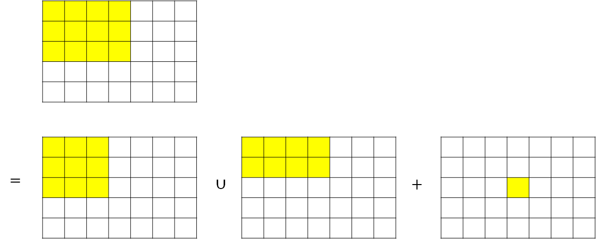
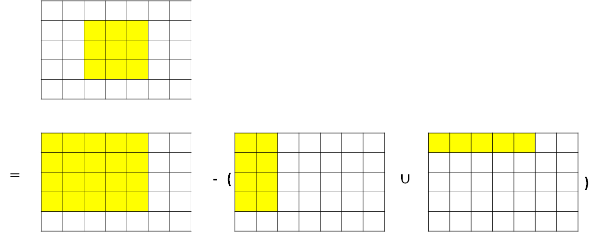

前綴和
前綴和
給定長度為 的序列 ，給定 筆查詢，每筆查詢要求出 。
如果每一次都用迴圈累加答案，單次查詢得時間複雜度為 ，要是 範圍都在 以內，很容易超出時限。
推導
令前 項的和為 ，。
那麼前 項的和 。
得出 。
算出 後，如果要計算 ，同樣將公式做整理：
。
計算 的時間複雜度為 ，單次查詢的時間複雜度為 ，整體時間複雜度為 。
1 2 3 4 5 6 7 8 9 10 11 12 | |
二維前綴和
二維前綴和的基礎，排容原理：。
假設 ，將要計算的範圍畫在二維平面上，假設 ，那麼 ，根據排容原理，。，所以 。
- 
今天要查詢 也要用相同的方式，令 ，。
- 
計算 的時間複雜度為 ，單次查詢的時間複雜度為 ，整體時間複雜度為 。
1 2 3 4 5 6 7 8 9 10 11 12 13 | |
根據以上方法，可以推廣到三維以上的前綴和。
差分
假設
那麼 就是 的前 項之和：。
用 表示 的前 項之和：
區間加值
給定序列 ，給定 次區間加值操作(在 加上 )，輸出最後的 。
每次操作，只會影響 和 這兩對相鄰項的差，如果使用差分序列 維護 ，只要修改 和 。